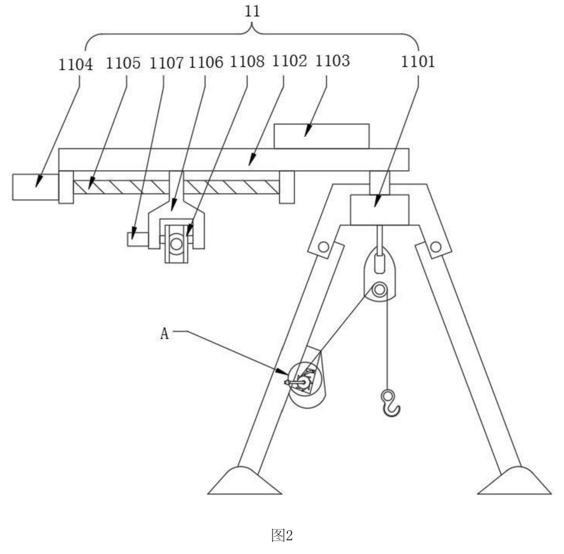

Device 1: a camera that patrols the wellhead装置一：巡检井口的相机
A foldable tripod with an end cap sits over the wellhead. Inside the cap a rotation motor spins a boom that carries the control box. At the boom’s end a second motor drives a lead screw whose nut carries the camera mount, so the orbit radius of the vision probe is motorised and can be set to cover any working area; a third motor pitches the camera. The camera performs uniform circular sweeps of the whole work face, locks quickly onto a worker’s face region and uploads frames to the control box, which runs the analysis on board: is the mouth region showing smoking, and is the area above the brow covered by a hard hat? Violations are flagged automatically.
一个带端盖的折叠三脚架架在井口上方。端盖内的旋转电机带动装有控制盒的摇臂转动；摇臂末端的第二个电机驱动丝杠，丝杠螺母带动相机支架，使视觉探头的巡检半径可以电动调节以覆盖任意作业区；第三个电机负责相机俯仰。相机对整个工作面做匀速环绕巡检，快速锁定工人的面部区域并把图像上传到控制盒，由控制盒在本地完成分析：口部区域是否在吸烟？眉毛以上是否有安全帽？违规行为自动标记。
One leg carries a hand-crank winch with a ratchet drum and self-locking pawl, so the same tripod can hoist equipment—or a person—without back-driving. Safety hardware should do more than one job.
其中一条腿装有带棘轮和自锁棘爪的手摇绞盘，同一个三脚架还能吊装设备——甚至救人——且不会反转。安全硬件应当一物多用。

